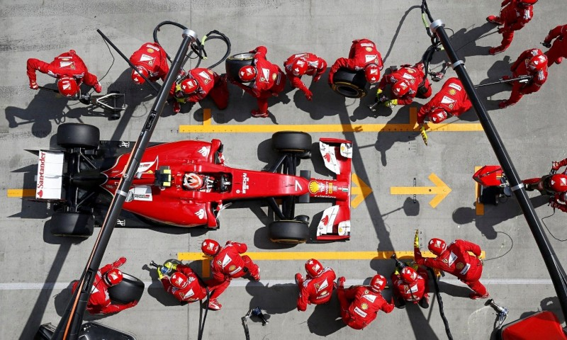

Tijdens de race is strategie enorm van belang. Er worden namelijk pitstops gemaakt om de banden te verwisselen, want die gaan snel kapot als de auto 300 km/uur rijdt. Er zijn tijdens de race drie soorten banden beschikbaar als het niet regent: soft (rood), medium (geel) en hard (wit). De banden moeten goed gekozen worden, want er is maar een beperkt aantal sets van iedere compound beschikbaar en bij elk circuit past weer een andere band. Daarom worden er allemaal strategieën bedacht. Een race kan een een-stopper zijn of bijvoorbeeld en driestopper. Dat is het aantal keren dat er een pitstop wordt gemaakt en de banden worden verwisseld.